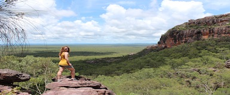
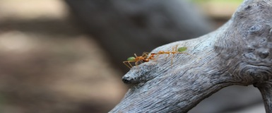

Photography and travel are two of my greatest passions. Cliché? Yep. Still what I love!

Travel Shot of the Week
This week's featured photo is called "Wonka and Wendy Go Rogue". Its title is a reference to the gentleman's getup and the lady's hair color, per their friends' amused commentary.
Classic Pics
These throwback shots are from our intrepid photographer's sojourn Down Under, featuring the breathtaking Kakadu National Forest and some tree ants, which have rear ends that taste like lime. It's true. And slightly spicy. .
 About the Author
Emily Foley decided to learn about photography when she was in college, and enjoyed sneaking into exclusive events by waving her nice(borrowed) camera and pretending she had a press pass. Now that high-end DSLRs are common and she would actually need a press pass for such a stunt, she focuses her lens on adventures, mainly outdoors and preferably with her partner in crime, Joe.
More Info
Emily's adventures and photos are chronicled on her blog, Suitcase Foley.
© 2013 Emily M. Foley. All Rights Reserved.